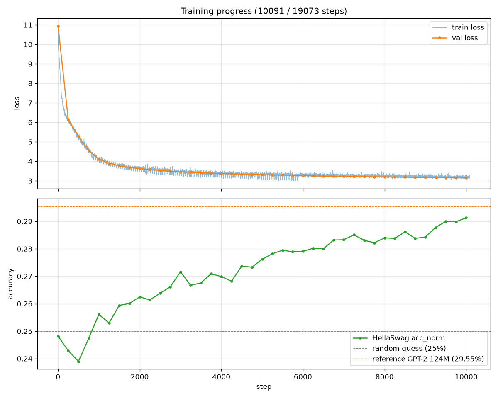

Pretraining and fine-tuning nanoGPT-124M from scratch
Last week I built, pretrained, and tuned a 124M-parameter GPT-2-style LLM from scratch, following Andrej Karpathy's nanoGPT. Rather than reproducing the pretraining only, I extended the practice with a supervised fine-tuning stage — turning a raw text-completion model into an instruction-following model.
Architecture
The model is a standard decoder-only Transformer inspired by GPT-2:
- Token embedding (wte): 50,304 × 768 (vocab padded from 50,257 up to a multiple of 128 for GPU-friendly dimensions)
- Position embedding (wpe): 1,024 × 768, using learned positional embeddings to encode token positions within a context window of up to 1,024 tokens
- 12 Transformer blocks: 12 attention heads × 64 dimensions, using PyTorch's fused
scaled_dot_product_attention(Flash Attention) - MLP: 768 → 3,072 → 768, with a 4× hidden expansion and GELU activation
- Output head: final LayerNorm followed by a 768 → 50,304 linear projection
- Weight tying:
lm_headandwteshare the same weight matrix, reducing the parameter count by roughly 38M - Initialization: GPT-2-style initialization with
std=0.02, while residual projections are scaled by1/sqrt(2·layers)to stabilize residual-stream variance
As a sanity check, the initial loss was approximately ln(50,304) ≈ 10.83, matching the theoretical value for a uniformly random next-token distribution.
Pretraining
- Data: FineWeb-Edu (sample-10BT) — ~10B GPT-2 BPE tokens of high-quality educational web text, sharded into 100 × 100M-token files
- Objective: next-token prediction with cross-entropy loss (self-supervised, no labels needed)
- Recipe: effective batch of 524,288 tokens (micro-batch 16 × 1,024 context × 32 gradient-accumulation steps), AdamW (β=(0.9, 0.95), weight decay 0.1 on 2D matrices only), LR warmup for 715 steps then cosine decay 6e-4 → 6e-5, global-norm gradient clipping at 1.0, bf16 autocast
- Run: 19,073 steps (~1 epoch over 10B tokens) on an H100 — ~3 hours at ~245k tokens/sec (~37% MFU)
- Evaluation during training: validation loss, plus HellaSwag (zero-shot, completion-style: score each candidate ending by masked average loss, pick the argmin). Started at 24.8% — random-guess level for a 4-way multiple choice — confirming clean initialization
The result is a base model: fluent at endless text, but if you ask it a question, it just keeps writing text without "answering."
Supervised fine-tuning
- Data: Stanford Alpaca — 52K instruction–response pairs, formatted with the standard Alpaca prompt template, each response terminated with
<|endoftext|> - Key mechanism — loss masking: target tokens for the instruction portion are set to
-1, whichF.cross_entropy(ignore_index=-1)skips. Gradients flow only from the response tokens, so the model learns how to answer, not how to write questions. - Recipe: LR 2e-5 (30× smaller than pretraining, to avoid catastrophic forgetting), weight decay 0, 3 epochs (~9,700 steps), data reshuffled each epoch. Total: ~36 minutes on the same GPU.
- Loss descended smoothly from 2.9 → 1.8 across three epochs.
After SFT, the same model given an instruction produces a direct answer and stops itself by emitting <|endoftext|> — a behavioral transformation, not a knowledge gain. The 124M model still hallucinates; SFT changed how it responds, not whether it's intelligent.
What actually ate the time
I've learned it's really hard to train a model with finite resources. Some of the most instructive moments came from the failures along the way:
- Diagnosing which of several look-alike processes was actually running, by reverse-engineering the LR schedule from the logs
- Tracing a failed 3.07 GiB allocation to the FP32 logits tensor (
B × T × vocab × 4 bytes), because the logits were upcast to FP32 during the loss computation under autocast - Debugging PyTorch 2.6's new
weights_only=Truedefault, which rejected checkpoints containing a pickled config dataclass
Takeaway
These were small problems individually, but they reinforced a bigger lesson: with finite compute, training an LLM is as much about understanding the systems around the model as it is about the model itself.
